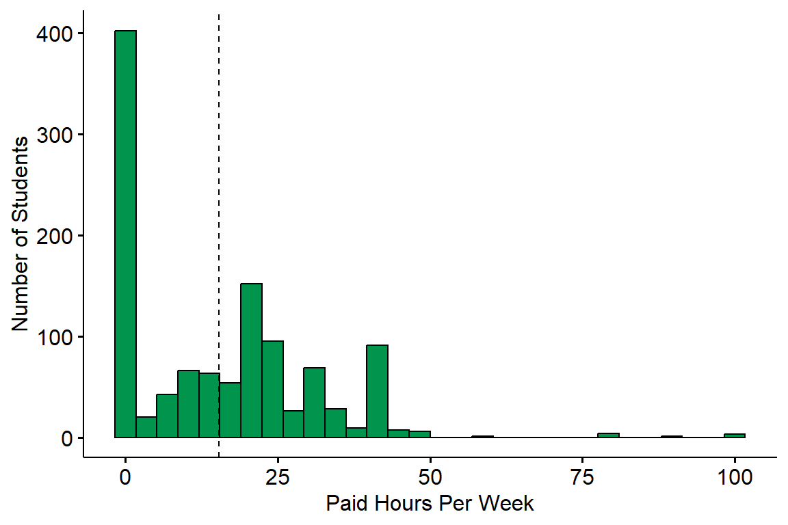
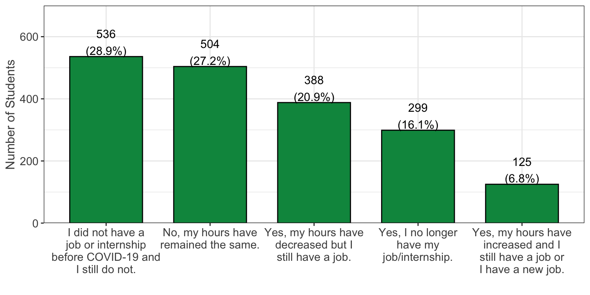
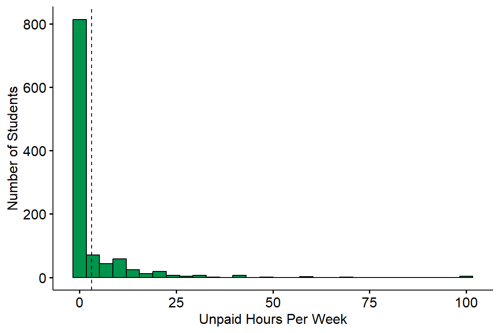
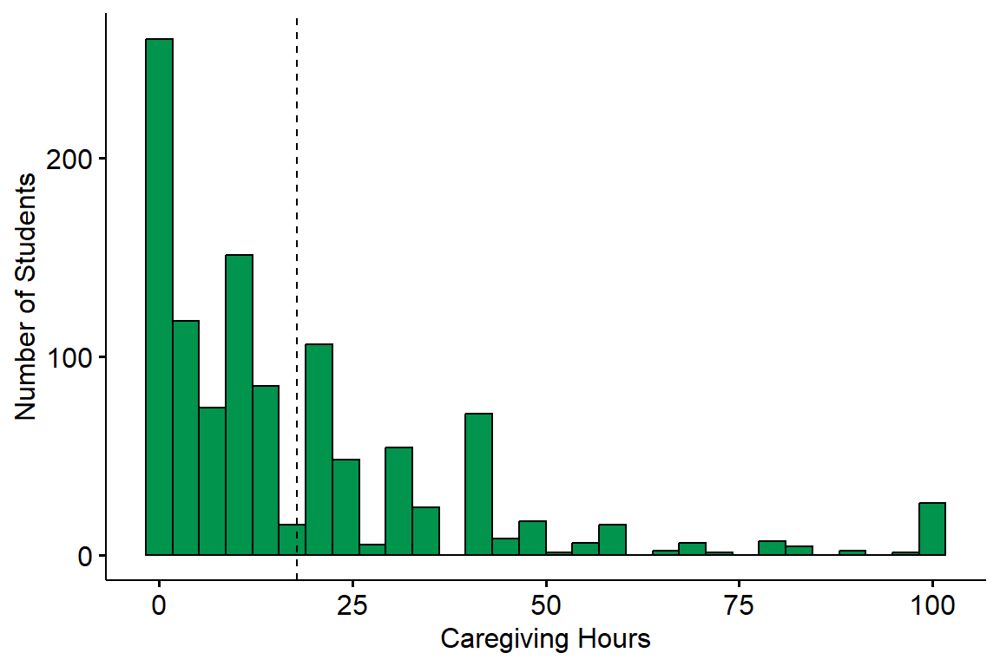
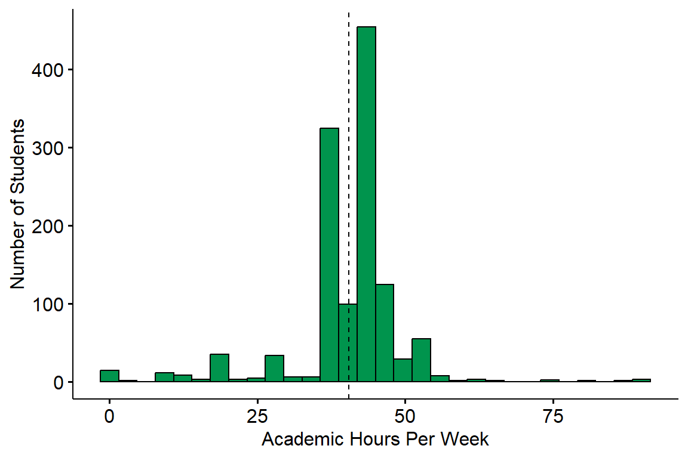
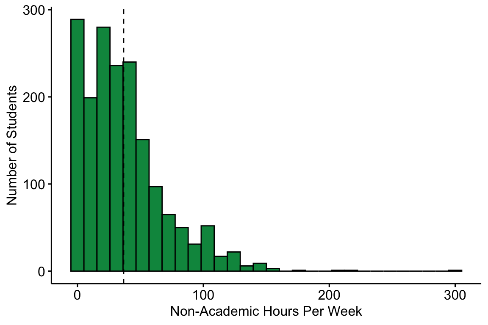
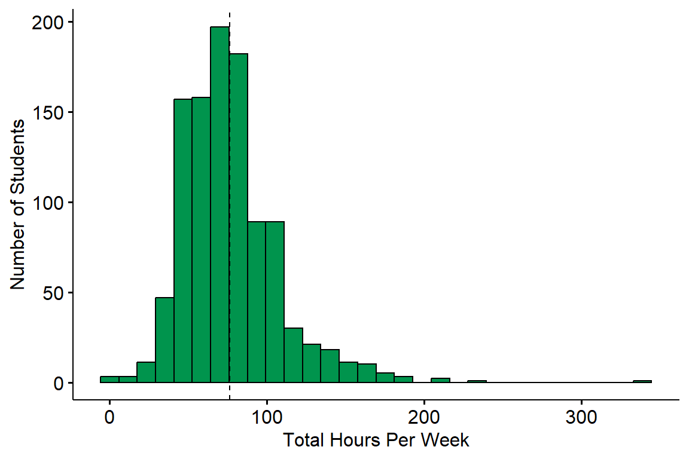

Workload
Students were asked to report information regarding their workload. This includes work from both paid/unpaid jobs, academic work, as well as time spent caregiving for any family members.
See Information on Missing Data
Weekly Paid Work Hours
Survey Question: Estimate the number of hours you work in a PAID job (e.g. server at a restaurant, office assistant, etc.) or paid internship (e.g. training, shadowing, or practicum) per week.
Summary: Students reported a wide range of paid work hours per week with an average of 15.37 hours (denoted by the dotted line) and a median of 15. The majority of students worked either part-time or not at all. Only 113 (9.9%) students were considered to be working full-time (40 or more hours per week).
Impact of COVID

Survey Question: Have the hours you work in a PAID job or internship changed due to COVID-19?
Summary: A total of 311 (28.6%) students reported not working prior to COVID, while 304 (28.0%) reported that their hours have not changed due to COVID. There were 257 (23.7%) students that had their hours decreased, 139 (12.8%) that no longer had a job/internship, and 75 (6.9%) that had their hours increased.
Unpaid Work Hours

Survey Question: Estimate the number of hours you work in an UNPAID internship (e.g. training, shadowing, practicum, and/or volunteer, etc.) per week. Do not combine with answers above.
Summary: The average number of unpaid work hours was 3.1 (denoted by the dotted line) and the median was 0. A total of 806 (75.4%) students did not work at an unpaid job/internship, while 138 (12.9%) students reported working 10 or more unpaid hours every week.
Unpaid Caregiving Hours

Survey Question: Estimate the number of hours you spend each week on UNPAID family obligations (e.g. taking care of younger siblings, preparing family meals, running errands for the family, etc.) per week.
Summary: A total of 850 (76.8%) students spent time each week caring for family members with an average of 17.81 hours (denoted by the dotted line) and a median of 10. There were 257 (23.2%) students that reported spending zero hours per week on family obligations, while 167 (15.1%) reported spending 40 or more hours each week.
Academic Workload

Survey Question: How many units are you currently taking?
Additional Notes: The hours of academic work per week were estimated by assuming 3 hours of work per unit.
Summary: The average number of academic hours worked per week was 40.5 hours (denoted by the dotted line), while the median was 42. A total of 681 (55.5%) students spent 40 or more hours per week on academic work.
Non-Academic Workload

Survey Question: This variable was derived by taking the sum of students’ paid work hours, unpaid work hours, and caregiving hours.
Additional Notes: Non-academic workload was calculated only for students who reported their paid work hours, unpaid work hours, and caregiving hours.
Summary: The average total number of hours worked per week in non-academic matters was 35.74 hours (denoted by the dotted line), while the median was 30 hours. A total of 411 (39.5%) students spent 40 or more hours per week on non-academic work.
Total Workload

Survey Question: This variable was derived by taking the sum of students’ paid work hours, unpaid work hours, caregiving hours, and hours spent from academic activities (assuming 3 hours per unit taken).
Additional Notes: Total workload was calculated only for students who reported their paid work hours, unpaid work hours, caregiving hours, and units.
Summary: The average number of total hours worked per week was 76.32 hours (denoted by the dotted line), while the median was 72 hours. A total of 975 (93.9%) students spent 40 or more hours per week on academic and non-academic work, while 392 (37.8%) spent 80 or more hours.